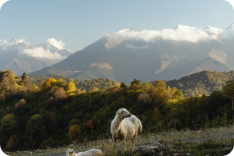

Здоровье — это самое ценное!
Правильное питание — основа здоровья. Согласно статистике Всемирной Организации Здравоохранения, продолжительность и качество жизни человека на 60% определяет тот образ жизни, который он ведёт, и то, как он питается.
Здоровое питание
Важную роль в лечебном процессе играет правильное и рациональное питание. Питание в столовой корпуса «Родничок» четырехразовое (завтрак, обед, полдник, ужин) по заказной системе. Заказная система питания, организована на основе недельного меню, выбор из каждой группы три наименования. Для большинства болезней предназначена специальная диета. «Меню-заказ» создаётся на основе рекомендованных диет.
Правильное питание — основа здоровья. Согласно статистике Всемирной Организации Здравоохранения, продолжительность и качество жизни человека на 60% определяет тот образ жизни, который он ведёт, и то, как он питается. Пятиразовое питание в кафе по заказной системе (завтрак, обед, полдник, ужин, дополнительный ужин «сонник» (соки, кефир) Диетическое питание (стол № 5 — печёночный, при заболеваниях желудочно-кишечного тракта; стол № 9 — диабетический, при сахарном диабете; стол № 15 — общий стол)
Правильное питание
Пятиразовое питание
Заказная система
Меню на основе рекомендованных диет
Правильное питание — основа здоровья!
Разнообразное и сбалансированное питание
Оптимальный баланс белков, жиров и углеводов
Продукты, богатые энергией, питательными и минеральными веществами, витаминами
Соблюдение правильного режима питания
Здоровый желудочно-кишечный тракт!
Стол при заболевании желудочно-кишечного тракта:
Сбалансированный рацион
Приготовление пищи способом варки, тушения, запекания
Исключение из рациона продуктов, оказывающие вредное механическое воздействие на органы пищеварения
Отсутствие блюд, вызывающих раздражение желудка
Оптимальная температура пищи
Уровень сахара под контролем!
Диабетический стол:
Контроль в употреблении легкоусвояемых углеводов
Исключение продуктов с большим содержанием животного жира
Ограничение в употреблении жареных, острых, солёных, пряных и копчёных блюд
Сбалансированный рацион
Почему полезно питаться правильно?
Здоровое питание — такое питание, которое обеспечивает наш организм всеми полезными веществами, необходимыми для того, чтобы мы выглядели и чувствовали себя хорошо. Здоровое питание снабжает человеческий организм оптимальным количеством энергии, держит в норме вес, поддерживает иммунитет, не нарушает работу внутренних органов и значительно сокращает риск развития различных заболеваний. Можно сказать, что рациональное питание стоит на страже нашего здоровья.
Уровень сахара под контролем!
Разнообразное и сбалансированное питание. Для нормального функционирования нашего организма необходим правильный баланс белков, жиров и углеводов. Суточный рацион белков — 80 г., из них около 50% должны составлять животные белки, жиров должно быть 50–70 г., из них животных — около 70%, углеводов — порядка 400 г. Также нужно не забывать о калорийности пищи. Для функционирования здорового человека необходимо 2500–2800 ккал в день.
В рационе не должно быть избытка животных жиров, которые в большом количестве содержатся в мясе с видимым жиром, в коже птицы, в жирных сырах. Готовить пищу лучше всего с использованием растительных масел: оливкового, кукурузного, подсолнечного, соевого. Салаты полезнее заправлять маслом, а не майонезом или сметаной.
Основу рациона должны преимущественно составлять такие продукты, богатые энергией, питательными и минеральными веществами, витаминами, как хлеб, блюда из круп и макаронных изделий, картофеля, а также овощи и фрукты. Не стоит забывать и о молочных продуктах, богатых кальцием.
Не стоит в большом количестве употреблять сладости (сахар, конфеты, кондитерские изделия) и пить сладкие напитки. Сладкое не только содержит большое количество калорий, что грозит ожирением. Его употребление в больших количествах может привести к таким неприятным последствиям, как атеросклероз.
Необходимо ограничить употребление соли. Оптимально количество соли для здорового человека — 5-6 граммов ежедневно. Лучше всего употреблять йодированную соль, которая является не только самой «невредной» солью, но и восполняет дефицит йода.
Не перебарщивать с алкоголем. Потребление его должно составлять не более 20 г в день.
Пищу лучше варить или готовить на пару. Так сохраняются минеральные вещества и витамины. Жареной пищей рекомендуется не увлекаться.
Соблюдение режима питания позволяет организму настроиться на определённый ритм, который способствует улучшению переваривания и усвоения пищи.
Кратный приём небольшого количества пищи. Это не только не перегружает организм, но и снижает риск повышения массы тела.
Здоровое питание обязательно должно поддерживать идеальный вес, когда индекс массы тела равен 20–24,9.
Для поддержания здоровья необходимо не только получать калории, но и тратить их. То есть вести активный образ жизни.
Правильное питание также очень важно для людей с какими‑то заболеваниями. Для большинства болезней предназначены специальные диеты.
Питание при заболеваниях желудочно-кишечного тракта
Главный принцип диеты — не урезание человека в разнообразии продуктов питания, а сбалансированность рациона.
Пища готовится наиболее подходящими технологическими способами — варкой, тушением, запеканием.
Из рациона исключаются продукты, оказывающие вредное механическое воздействие на органы пищеварения: свежие фрукты с кожурой, жёсткое мясо, сухожилия, хрящи, капуста, а также твёрдая пища и пища большими кусками.
В меню — блюда, не вызывающие раздражение желудка. То есть, без добавления пряностей (горчица, хрен, острый перец), лука и чеснока. В рационе отсутствуют острая, солёная и кислая пища, мясные и рыбные продукты с высоким содержанием экстрактивных веществ, крепкие бульоны, чёрный кофе. Строго контролируется количество соли в диетической пище. Свежее масло добавляется уже в готовое блюдо, а не во время приготовления.
Супы и соусы готовятся на крупяных и лёгких овощных отварах. Не допускается слишком горячая и очень холодная пища. Пища всегда достаточно проваренная, протушенная и пропечённая.
Питание при сахарном диабете
В первую очередь больной значительно (а в некоторых случаях и полностью) ограничивается в употреблении легкоусвояемых углеводов. Это сахар, конфеты, шоколад, кондитерские изделия, сдоба, варенье, мёд, мороженое и другие сладости, а также сладкие фрукты и ягоды: виноград, бананы, изюм, финики.
Максимально ограничивается потребление продуктов, содержащих большое количество животного жира: колбасы, сардельки, сосиски, жирное мясо, майонез, сметана, сыры).
Серьёзно ограничивается или исключается употребление жареных, острых, солёных, пряных и копчёных блюд, консервов, перца, горчицы, алкогольных напитков. Противопоказаны виноград, бананы, изюм. Сахар допускается лишь в небольших количествах по разрешению врача.
Наоборот, рекомендуется употребление следующих продуктов: преимущественно чёрный или специальный диабетический хлеб; овощные супы; нежирное мясо, птица или рыба; овсяная, гречневая крупа; овощи, кроме картофеля, свёклы и моркови (их нужно употреблять в небольшом количестве); фрукты и ягоды кислых и кисло-сладких сортов; творог; чёрный или зелёный чай.
Галерея
-
-
-
-
 -
-